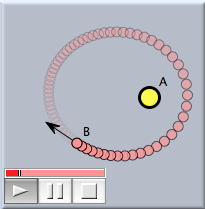

CindyLab の要素
前のセクションで述べた通り、 CindyLab でのシミュレーションは点のような粒子とそれらの動きに影響を与える力のシステムとしてモデル化されます。最も基本的な単位は自由質点です。自由質点は、シンデレラの幾何学の点のようなものです。しかしながら、質点は、位置の他、現在の速度、質量、電荷といった属性を持っています。 CindyLab におけるシミュレーションではパラメータ(変数)によって質点が動きます。自由質点を加えるのは自由点を加えるようなものです。質点は次の2つのモードのいずれかによって追加されます
 | 自由質点 |
 | 速度 |
質点の動きは力の影響を受けます。力にはいろいろな源があります。
- 第一に、重力（一定なものもそうでないものも）や磁場といった環境によるものです。それらは、つぎの3つのモードで与えられます。:
 | 重力を加える |
 | 恒星 |
 | 磁場を加える |
- 第二に、特定の2つの質点の間に働く力があります。通常、それらの力は、バネや、電磁気力、重力の相互作用に対応します。そのような、粒子間の相互作用を加えるいくつかのモードがあります。
 | ゴムバンド (長さ0のバネ) |
 | バネ |
 | クーロン力 |
- 最後に、力は、全体にかかる重力や、システムのすべての粒子の相互作用といった環境から来るかもしれません。
CindyLab の最後の要素は、実験装置の壁と床が持つ性質です。粒子はそのような"反射壁"に当たると、テニスボールのようにはね返ります。反射壁は次の2つのモードで加えられます。
 | 床 |
 | 反射壁 |
これらのオブジェクトの動作は、インスペクタ(または CindyScript)の正確な設定によって支配することができます。 CindyLab のそれぞれの要素に関するセクションで、これらの物体が利用できる変数の種類について述べます。
さらに、すべての物体にあてはまる属性は、 環境 のグローバル設定によってコントロールできます。
物理シミュレーションの開始
物理的な物体が描かれると、アニメーションのコントロール装置が画面に現れます。このコントロール装置によって、 アニメーションモードのように、シミュレーションの開始/終了/一旦停止ができます。アニメーションモードのように、いつでも自由点や自由質点をつかんだり動かしたりすることができます。
 |
| 簡単な物理アニメーション |
物理アニメーションを始めると、自動的に「動かすモード」に変わります。他のモードに移行すると、物理アニメーションは停止します。シミュレーションの精度とグローバルなフレームレートは 環境インスペクタによって調整できることに注意してください。
環境設定
CindyLab のもうひとつのとても重要な構成要素は 環境設定です。環境は、物体に共通と思われる物理的要素の属性を集めたものです。そこには、全体にかかる摩擦と重力といった要素があります。重力や静電力による任意の粒子間の相互作用もコントロールできます。それらすべての属性は、インスペクタの他、適当な CindyScript の命令文によっても影響されます。
Page last modified on Tuesday 13 of March, 2012 [13:26:04 UTC].
The original document is available at
http://doc.cinderella.de/tiki-index.php?page=The%20Elements%20of%20CindyLabJ